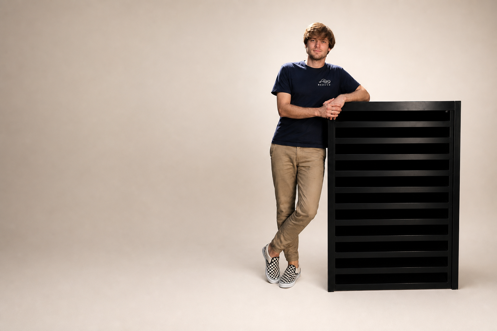

Product · akoestische omkasting
Akoestische omkasting voor uw warmtepomp
Geen sierkap. REDUCD is een geteste geluidskast: 150 mm demper, gerecycled PET, Magnelis®. Vrijstaand gemiddeld 14 dB(A) (Peutz, juli 2025). Wandmodel 10–12 dB(A). Vanaf € 2.335.

| Model | Demping | Vanaf |
|---|---|---|
| Vrijstaand S / L / XL | ± 14 dB(A) | € 2.335 / 2.865 / 3.365 |
| Wandmodel S / L | 10–12 dB(A) | € 2.335 / 2.865 |
Magnelis, zonder installatie. Maatkeuze waarschijnlijk tot inmeting.